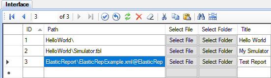

Elastic Report Plugin permite generar informes de acuerdo con una configuración personalizada. Con este complemento se puede crear casi que cualquier informe deseado. Un usuario simplemente selecciona el período y hace clic en el botón generar informe. Un administrador crea configuraciones de informes que definen un conjunto de diferentes secciones de informe y unen las columnas y filas del informe a los datos del sistema.
Primero debe realizar la secuencia general de instalación de complementos y luego realizar varias acciones adicionales:
Un informe consta de un conjunto de secciones que aparecen, una por una, en el documento de salida. Cada sección tiene su propio tipo, parámetros y enlace de datos. Además, el informe tiene parámetros generales que afectan a todas las secciones. El mismo informe se puede generar en una variedad de formatos. Actualmente soporta los formatos Excel, PDF y HTML. La apariencia de un mismo informe, generado en diferentes formatos, puede diferir ligeramente.
El archivo de configuración especifica el formato del informe y define el enlace de los datos a los canales de entrada. Debe haber un archivo de configuración separado para cada formulario de informe. El archivo de configuración está en formato XML. Debe guardarse en el directorio Interface, o en su subdirectorio dentro de un proyecto.
El plugin distributivo contiene un ejemplo del archivo de configuración de informe, SCADA\Interface\ElasticReport\ElasticRepExample.xml. Este ejemplo incluye la descripción detallada de la configuración y demuestra la generación de secciones de informe, de todos los tipos posibles.
Los archivos de configuración se pueden editar utilizando cualquier editor de texto. Por ejemplo, el editor de texto gratuito Notepad++ permite trabajar comodamente con archivos XML mediante un complemento especial.
Es posible personalizar los estilos de informe: fuentes, colores, tamaños de celda, etc.
El archivo SCADA\ScadaWeb\plugins\ElasticReport\templates\ElasticRepExcel.xml especifica los estilos de los informes en formato Excel.
Para crear estilos personalizados, abra este archivo en Excel y vaya a la página Custom Styles donde se encuentran los estilos adicionales. Utilice los estilos de la página Default Styles como ejemplo.
Los estilos personalizados para el formato PDF se especifican en el archivo SCADA\ScadaWeb\plugins\ElasticReport\template\ElasticRepPdfCustom.xml
El archivo XML, que define los estilos de PDF, se edita manualmente utilizando cualquier editor de texto. Utilice los estilos predeterminados ubicados en ElasticRepPdfDefault.xml como ejemplo.
Los estilos de informe para salida HTML se configuran en el archivo SCADA\ScadaWeb\plugins\ElasticReport\css\customstyles.css de acuerdo con las reglas de Cascade Style Sheets.
Para hacer que el informe aparezca en la lista de informes disponibles, es necesario registrarlo en la tabla Interface utilizando la aplicación Administrator. Especifique la ruta al archivo de configuración del informe relacionado con el directorio de la interfaz, especifique el tipo de informe ElasticRep e ingrese el título del informe (ver la Figura).Después de subir el proyecto al Server, el informe está disponible en la página Main Menu > Reports page.
